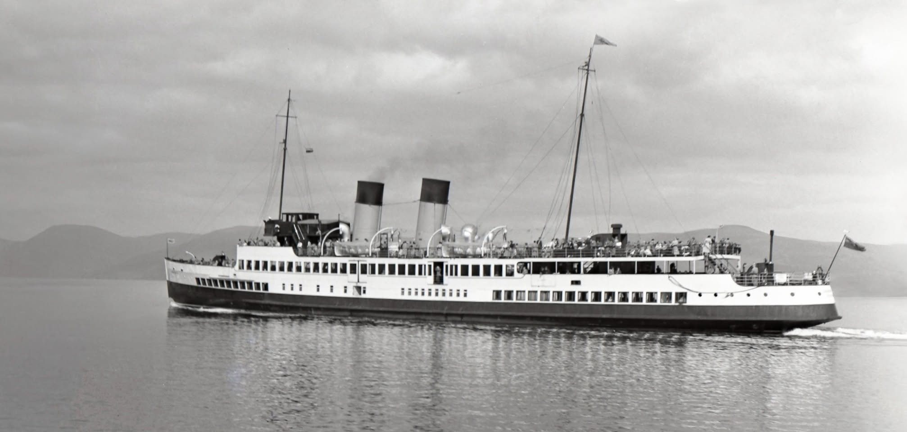
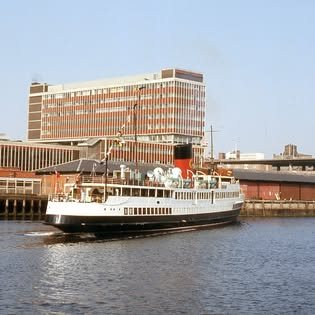
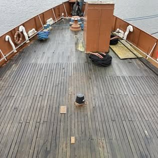
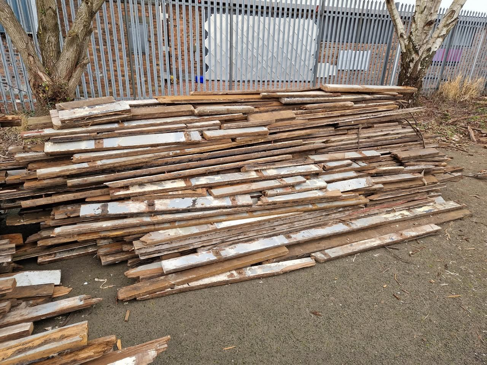
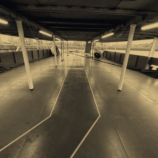
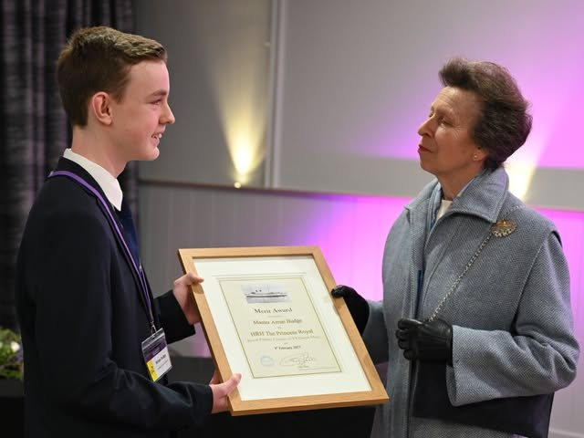

Glasgow · After dark
She was never only a day boat
Lit, alongside, with the city behind her. Help us put her back on the water she was built for.
Photograph courtesy of Friends of TS Queen Mary
The restoration appeal
Two hundred and fifty were built here. One is left.
Not the last in Scotland — the last anywhere. When she goes, that is the end of it.
Raised to date
£xx m
£0Target £10m
Figure to be confirmed
She floats at £10m. Until then she is a hull alongside.
Her story
Ninety years on one river

1933Launched at Dumbarton
Built by William Denny and Brothers for Williamson-Buchanan Steamers.
1935She gives up her name
Cunard wanted it for their Clydebank liner. They sent a portrait of the Queen in exchange.
1957Converted to oil
The single funnel she carries today dates from this refit.
1976The name returns
Renamed TS Queen Mary again by the actor Roddy McMillan.
1977Withdrawn
Forty-four seasons ended, and nothing replaced her.

2016Home to the Clyde
Towed up the firth on 15 May, forty years after she last sailed it.
Lit, alongside, with the city behind her.
Photograph courtesy of Friends of TS Queen Mary, toned for this page
The work
What is happening aboard

Lifting the deck

Sorted for reuse

Below, after dark
The vision
What she becomes
Sailing again
Under her own power, with the certification a passenger vessel needs in 2027.
A training ship
The first cadet training ship in the UK, in a city that used to build one of these a fortnight.
Evenings aboard
Dinners, receptions and charters alongside — the income that keeps a heritage ship alive.

HRH The Princess Royal
Royal Patron
Support
Every pound goes into the ship
£25A box of rivets
£50A metre of deck plate
£100A shipwright’s day
£250A section of steel deck
Give once or monthly
Gift Aid adds 25%